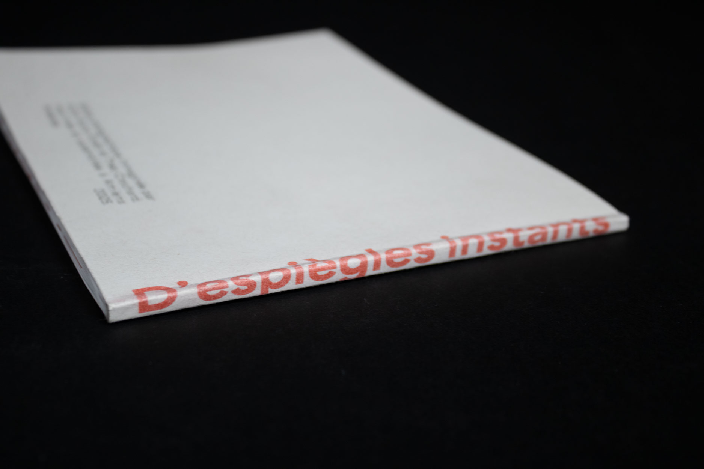
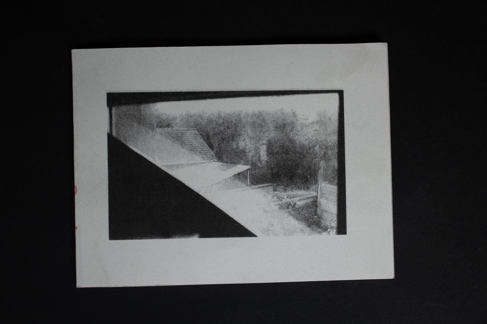
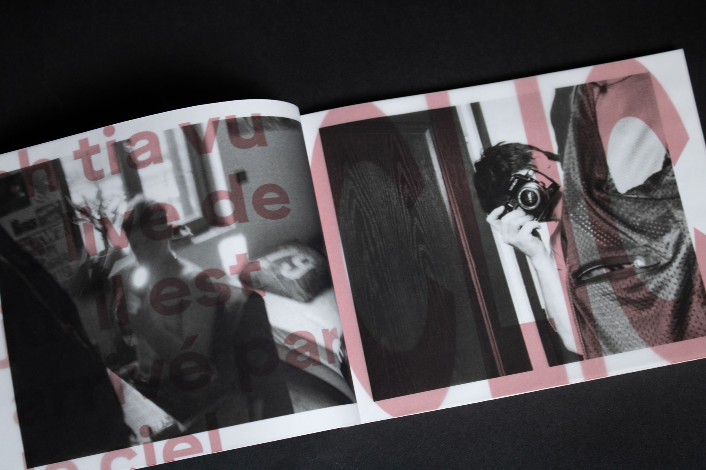
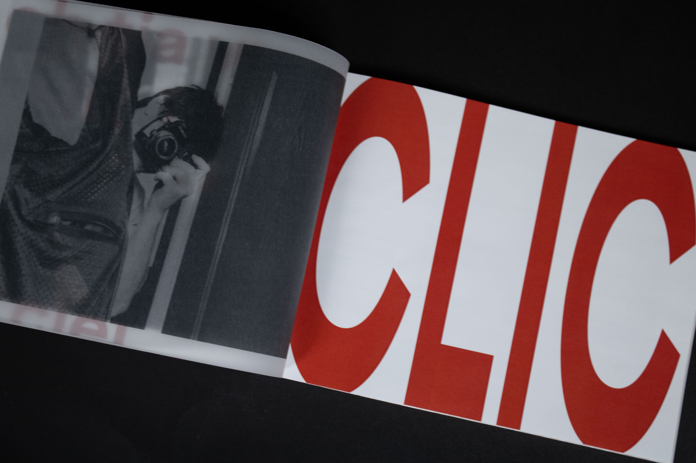
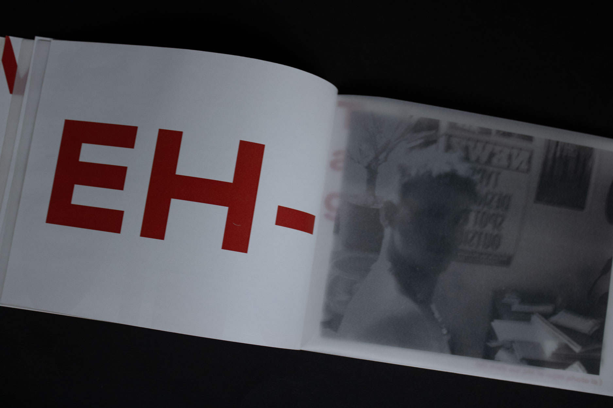
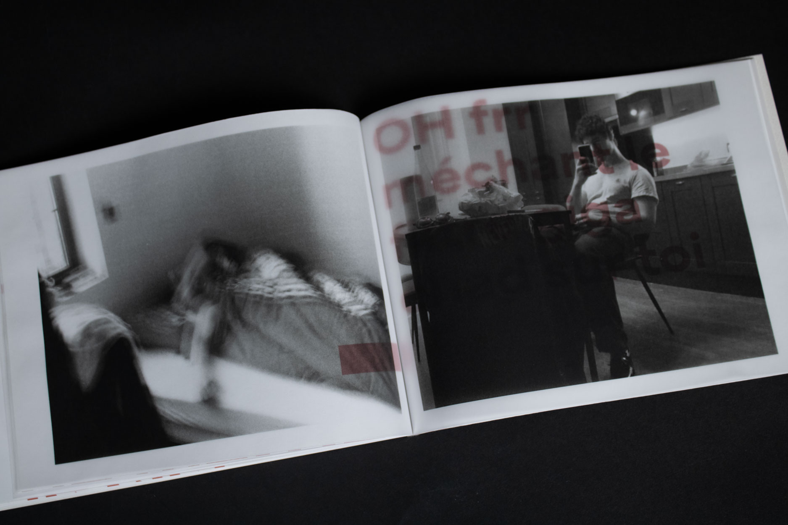
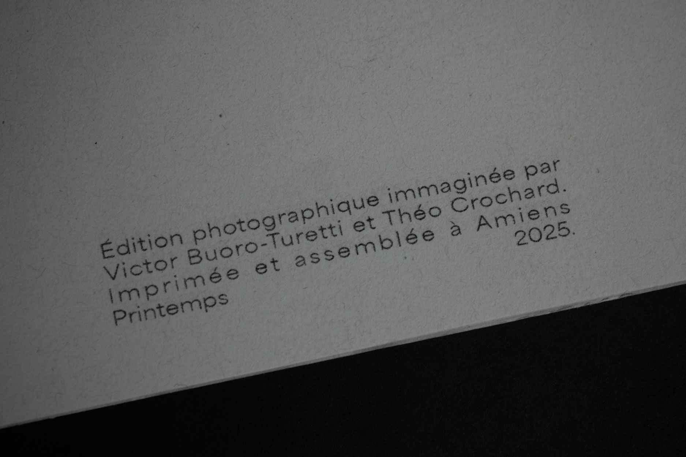

Ce projet est un travail collaboratif avec Victor Buoro, mon colocatiare. L'objectif de cette série de photo était de surprendre l'autre en le photographiant, sans se prévenir mutuellement. Nous nou sommes ensuite amusés à se remémorer et imaginer les reéactions que l'on a eu ou que l'on aurait pu avoir au moment des photos.





